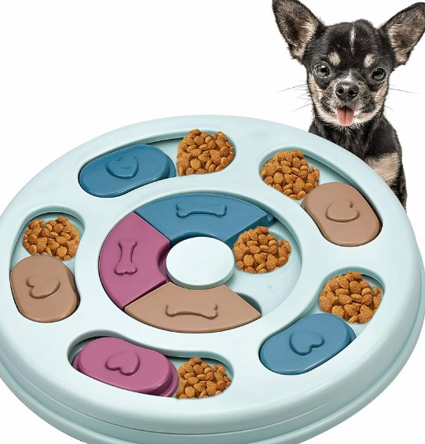

|  |
Comedero dispensador de comidaHaz que la hora de comer sea un desafío emocionante con nuestro comedero interactivo. Equipado con piezas deslizables, tu perro tendrá que descubrir y moverlas para revelar la sabrosa recompensa que se encuentra debajo. Este diseño ingenioso no solo proporciona estimulación mental, sino que también ralentiza la alimentación, fomentando una ingesta más saludable. Transforma la rutina diaria de alimentación en una experiencia interactiva y divertida para tu mascota. 8.50€ |